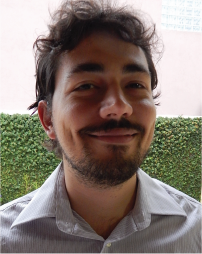

About

Bem vindo ao meu portfolio,
Sou formado em Design Gráfico pela Universidade Tecnológica Federal do Paraná; atualmente, moro em Curitiba. Minhas paixões incluem a criação de personagens e cenários animados para jogos digitais; e também, projetos editoriais.
Neste site você pode conhecer sobre meus principais trabalhos.
Welcome to my portfolio,
I’m a graphic designer graduated at Federal University of Technology – Paraná. My passions include the cration of animated characters and scenery for digital games; and editorial projects as well.
Here, you can get to know a bit about my main works.